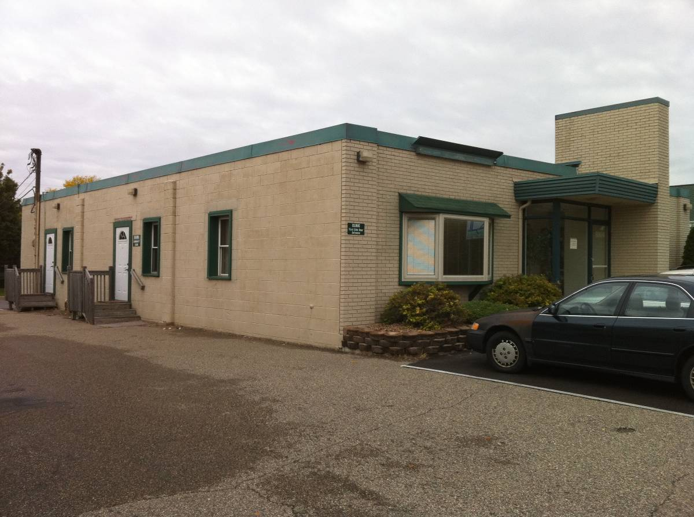

Our Clinic
Opened since February 2008, Rahma Community Clinic is the brainchild of Dr. Bibi Swalehah Khoyratty, a hematologist/oncologist who practices in Twin Cities area. She routinely noticed that many of her patients did not carry medical insurance and were unable to get basic medical consultations.
Eager to help them by any means possible, Dr. Khoyratty took the initiative for a free facility that can , at least, consult patients for free and provide as much of other related services either free or at very low cost. She approached the Muslim Community Center, a Muslim organization based in Bloomington, MN., with her vision to help her fellow human beings regardless of their race, color, creed, income level, or religious affiliation. And that was the start of the Rahma Community Clinic.
With efforts of her husband Ehtasham Khoyratty, a chemical engineer and the Operations Director of the facility, Iqbal Qazi, the clinic's chief Coordinator, her colleagues in the Muslim medical community, student volunteers, and many others, Rahma Community Clinic has helped around 200 patients with over 700 visits.
Click the image below to watch a video from our free flu shots day held each fall.
